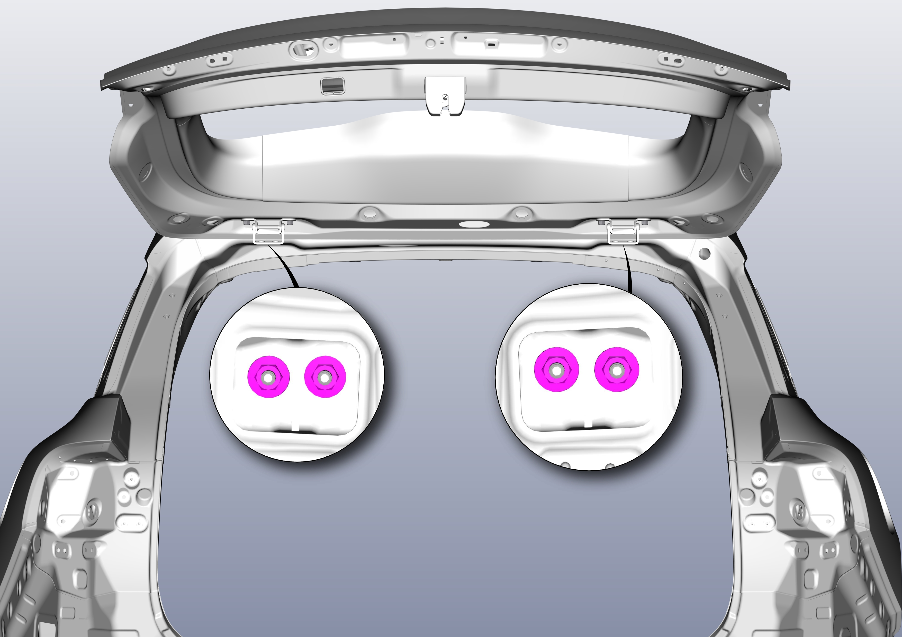

调整背门焊接总成
旋松（无需旋出）背门铰链（顶盖侧）固定螺母，对背门进行调整。工具：套筒（13），螺栓拧紧力矩 33±3N.m。

提示
-
如果背门焊接总成处于关闭状态时各处的间隙尺寸都是均匀的，没有向内凹或向外凸而且轮廓对齐，即说明背门已调整好。
-
安装上述步骤，如果没有达到调整效果，可参照下列步骤进行下一步调整。
-
拆卸 C 柱上饰板总成，参见 拆卸与安装C柱装饰板 。
-
脱开顶棚后端固定卡扣，参见 拆卸与安装C柱装饰板 。
-
旋松（无需旋出）背门铰链（顶盖侧）固定螺母，对背门焊接总成铰链进行调整。工具：套筒（13），螺栓拧紧力矩 33±3N.m。
-
